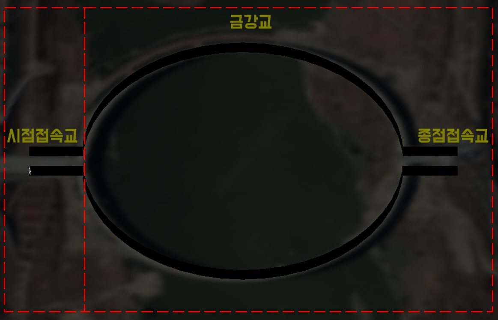
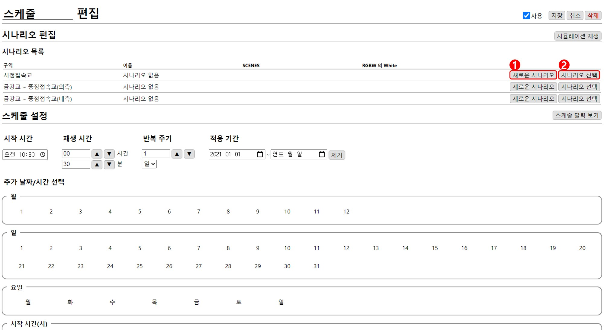
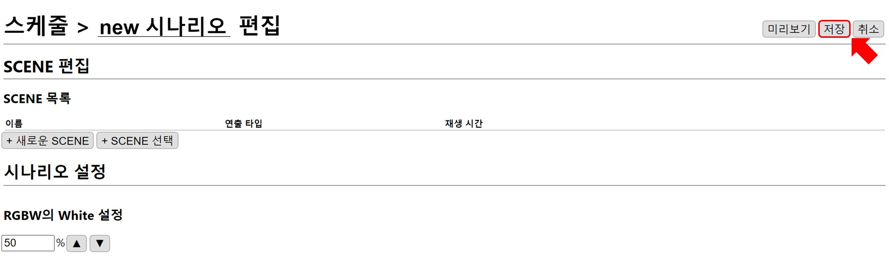
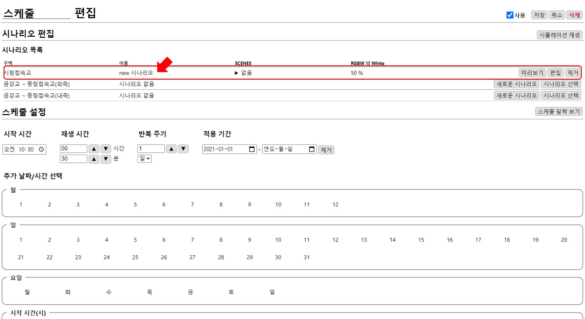
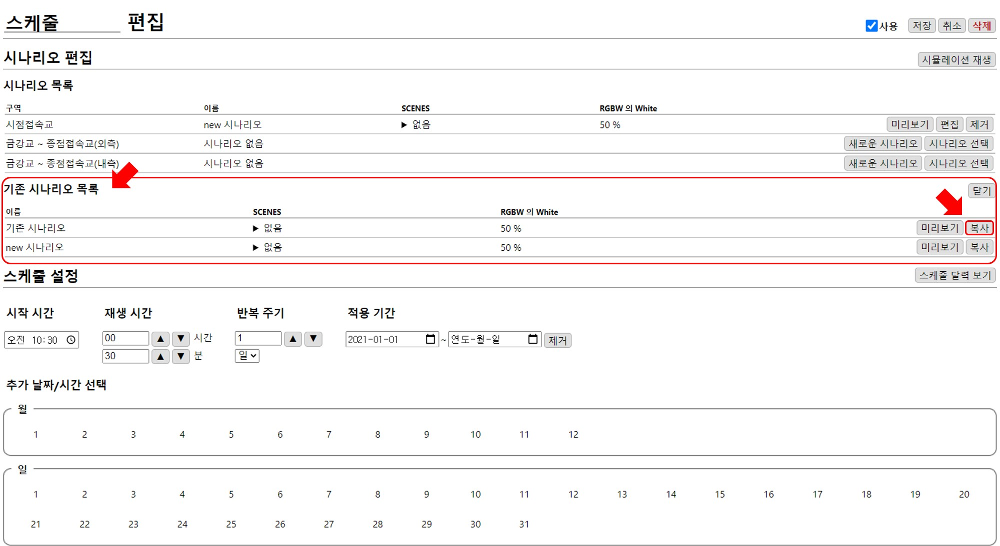
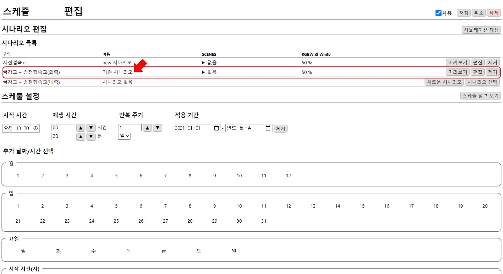
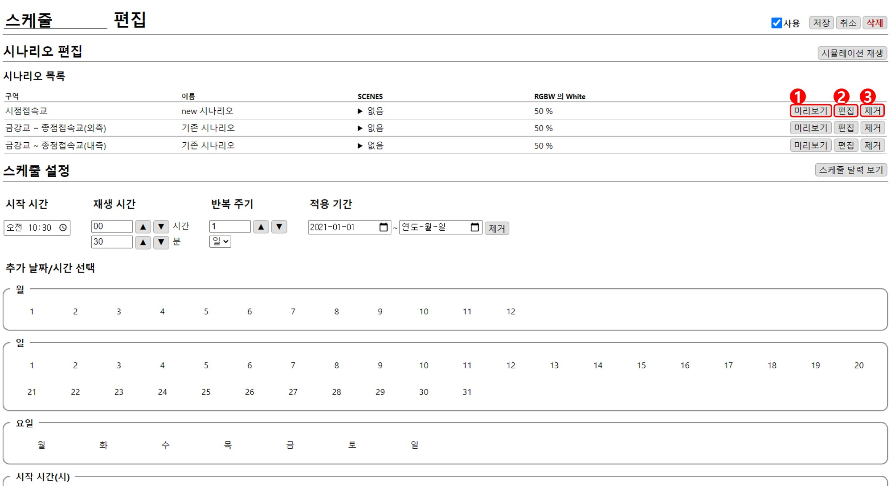
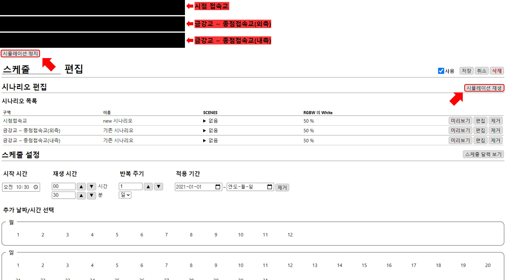

시나리오 편집
스케줄에 시나리오를 입력합니다. 시나리오 구역은 시점 접속교와 금강교 ~ 종점접속교로 나눠져있습니다.

시나리오 추가
시나리오를 구역별로 추가합니다.
스케줄에 시나리오를 입력하는 방법은 새롭게 만들어서 추가하는 방법인 1. 새로운 시나리오와 기존에 만든 시나리오를 추가하는 2. 시나리오 선택 방법이 있습니다.

1. 새로운 시나리오
새로운 시나리오버튼을 누르면 시나리오 편집창으로 이동합니다.

저장하면 스케줄의 해당 구역에 새로운 시나리오가 추가됩니다.

2. 시나리오 선택
시나리오 선택버튼을 누르면 이전에 만들었던 기존 시나리오 목록이 나타납니다.

추가할 시나리오를 복사하면 해당 구역에 시나리오가 추가됩니다.

편집

1. 미리보기
미리 보기를 통해 시나리오를 확인할 수 있습니다.

미리보기 정지 버튼을 누르면 재생 화면이 닫힙니다.
2. 편집
시나리오의 편집창으로 이동합니다.
3. 제거
구역에서 시나리오가 제거됩니다. 연출 조명은 꺼진 상태가 됩니다.
시뮬레이션 재생
추가된 시나리오를 구역에 맞게 확인할 수 있습니다. 시뮬레이션 재생를 통해 재생합니다.

시뮬레이션 정지 버튼을 누르면 재생 화면이 닫힙니다.